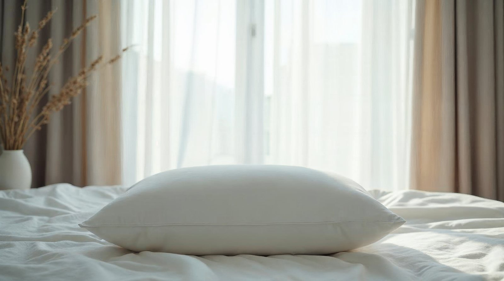
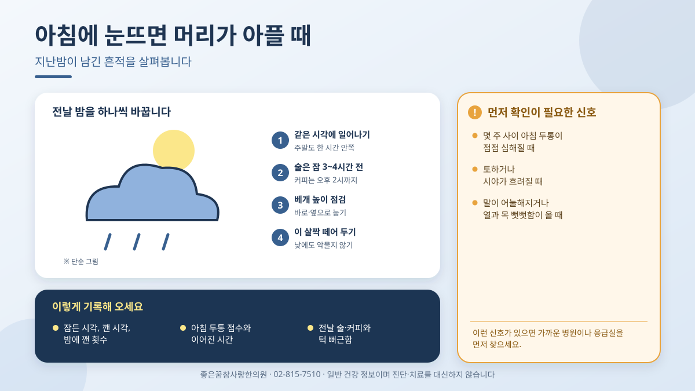

이종호 한의사 감수좋은꿈참사랑한의원 대표원장 (한의사 면허번호 19769)발행 2026-11-26 · 수정 2026-11-26
이 글의 차례
알람이 울리고 눈을 뜨는 순간, 머리가 먼저 무겁습니다. 관자놀이가 지끈거리고 뒷머리가 뻐근해서 일어나 앉기도 싫습니다. 분명 일곱 시간은 잤는데 밤새 일을 한 것처럼 몸이 무겁습니다. 세수를 하고 아침을 먹고 한두 시간이 지나야 두통이 조금씩 가라앉습니다.
진료실에서 "아침마다 머리가 아파요"라는 말을 들으면 저는 두통보다 먼저 밤 이야기를 여쭙니다. 몇 시에 주무셨는지, 코를 고시는지, 이를 갈거나 악무는지, 베개는 어떤지, 전날 저녁에 무엇을 드셨는지요. 아침의 두통은 대개 지난밤이 남긴 흔적이기 때문입니다.
기상 두통은 하나의 병 이름이라기보다, 잠과 관련된 여러 원인이 아침이라는 시간에 모여 나타나는 모습입니다. 그래서 원인을 하나씩 짚어 보면 의외로 생활에서 바꿀 수 있는 부분이 많이 보입니다.
이 글에서는 아침 두통을 부르는 흔한 원인들, 다른 두통과 나누는 방법, 진료실에서 여쭙는 것과 생활에서 해 볼 수 있는 것을 정리했습니다. 내 아침 두통이 어디서 오는지 짐작해 보는 데 도움이 되셨으면 합니다.
기상 두통은 어떤 모습으로 나타나나요?
눈을 뜰 때부터 머리가 묵직하거나 조이는 느낌, 관자놀이나 이마가 지끈거리는 느낌으로 말씀하시는 분이 많습니다. 일어나 움직이고 한두 시간이 지나면 조금씩 가라앉는 경우가 흔합니다.
두통과 함께 입이 바짝 마르거나, 턱이 뻐근하거나, 뒷목이 굳어 있거나, 밤새 잔 것 같지 않게 피곤한 느낌이 따라오기도 합니다. 이런 동반 증상이 원인을 짐작하는 중요한 실마리가 됩니다.
어떤 분은 매일 아침, 어떤 분은 술을 마신 다음 날이나 주말 늦잠을 잔 날에만 두통이 온다고 하십니다. 언제 두통이 오고 언제 오지 않는지를 나눠 보면 원인에 한 걸음 가까워집니다.
왜 자고 일어났는데 머리가 아플까요
잠은 몸이 쉬는 시간이지만, 잠자는 동안에도 우리 몸에서는 많은 일이 일어납니다. 숨이 고르게 쉬어지는지, 턱과 목 근육이 편하게 풀려 있는지, 잠의 깊이와 길이가 적당한지에 따라 아침의 머리 상태가 달라집니다.
잠자는 동안 숨이 자주 막히면 몸에 들어오는 산소가 줄고 이산화탄소가 쌓이면서 머리의 혈관이 넓어지고, 잠도 자주 깨어 얕아집니다. 그래서 코를 심하게 골거나 숨이 멎는 수면무호흡이 있는 분은 아침에 머리가 묵직하고 개운하지 않은 경우가 많습니다.
밤새 이를 갈거나 꽉 악물면 턱과 관자놀이 근육이 몇 시간씩 쉬지 못하고 일을 합니다. 아침에 턱이 뻐근하고 관자놀이가 아프다면 이 이유를 먼저 생각해 봅니다. 낮에 긴장이 많았던 날 밤에 더 심해지는 경우가 많습니다.
잠이 너무 짧아도, 너무 길어도 두통이 옵니다. 주말에 평소보다 두세 시간 더 자면 오히려 머리가 아픈 것도 잠의 리듬이 흔들리고, 평소 마시던 커피 시간이 늦어지기 때문으로 설명합니다. 몸은 일정한 리듬을 좋아합니다.
아침 두통을 부르는 흔한 원인들
진료실에서 기상 두통을 살필 때 흔히 짚어 보는 원인들을 모아 보면 이렇습니다. 한 가지만 있기보다 두세 가지가 겹쳐 있는 경우가 많습니다.
- 코골이와 자다가 숨이 멎는 수면무호흡
- 밤새 이를 갈거나 꽉 악무는 습관
- 너무 높거나 낮은 베개, 엎드려 자는 자세
- 잠이 부족하거나 주말에 몰아 자는 리듬
- 전날 저녁의 술, 늦은 시각의 커피
- 진통제를 너무 자주 먹는 습관
- 밤사이 오르는 혈압이나 건조한 방 공기
이 가운데 진통제를 자주 먹는 습관은 놓치기 쉽습니다. 약 기운이 빠지는 새벽과 아침에 두통이 생기면서, 다시 약을 찾게 되는 고리가 생길 수 있기 때문입니다. 한 달에 진통제를 드시는 날을 한번 세어 보세요.
잠이 얕고 새벽에 일찍 깨며 기분이 가라앉는 날이 이어진다면 마음의 무게도 함께 살펴봅니다. 우울감이 있을 때 아침 두통과 무거움을 호소하시는 분이 적지 않습니다.
다른 두통과는 어떻게 나눠 보나요
긴장성 두통은 대개 오후나 저녁, 하루의 피로가 쌓인 뒤에 머리가 조여 옵니다. 반면 기상 두통은 아침에 가장 심하고 낮이 되며 덜해지는 경우가 많아서, 하루 중 언제 아픈지가 나누는 첫 번째 기준이 됩니다.
편두통도 새벽이나 아침에 시작하는 경우가 있습니다. 머리 한쪽이 욱신거리고 빛과 소리가 싫으며 속이 메스꺼운 발작이 몇 시간에서 하루 넘게 이어진다면 편두통의 모양을 생각해 봅니다. 한쪽 눈 뒤가 찌르듯 아파 같은 시각에 잠이 깬다면 군발두통을 생각합니다.
아침 두통이 몇 주에 걸쳐 점점 심해지고 횟수가 늘거나, 이전에 없던 새로운 두통이 생겼다면 생활 원인으로 넘기지 마시고 신경과에서 다른 원인이 없는지 확인해 보시길 권합니다.

잠자리 환경 살펴보기
베개는 생각보다 아침 두통과 가깝습니다. 너무 높으면 목이 앞으로 꺾이고, 너무 낮으면 머리가 뒤로 젖혀져 밤새 뒷목이 긴장합니다. 바로 누웠을 때 얼굴이 천장을 바로 보고, 옆으로 누웠을 때 코와 가슴 가운데가 일직선이 되는 높이가 좋습니다.
방이 너무 덥거나 건조해도 잠이 얕아지고 아침에 머리가 무겁습니다. 겨울에는 난방을 너무 세게 하지 마시고 가습기나 젖은 수건으로 습도를 맞춰 보세요. 환기가 잘 안 되는 방이라면 잠들기 전에 잠깐 창문을 열어 공기를 바꿔 주시면 좋습니다.
잠들기 직전까지 휴대폰을 보는 습관도 잠을 얕게 만듭니다. 화면의 밝은 빛과 쏟아지는 정보는 머리를 깨어 있게 합니다. 잠들기 30분 전에는 화면을 내려놓고 조명을 낮춰 보세요. 그 시간에 가벼운 스트레칭이나 따뜻한 차 한 잔으로 하루를 마무리하는 작은 의식을 만들어 두면, 몸이 잠들 준비를 하는 데 도움이 됩니다.
혈압과 계절도 함께 봅니다
혈압이 높은 분은 새벽부터 아침 사이에 혈압이 오르면서 뒷머리가 무겁다고 말씀하시기도 합니다. 다만 혈압이 높아도 아무 느낌이 없는 경우가 대부분이어서, 두통으로 혈압을 짐작하기보다는 아침에 일어나 직접 재 보시는 것이 정확합니다.
겨울 아침에는 따뜻한 이불 속과 찬 방 공기의 차이가 커서 목과 어깨가 움츠러들고 혈압도 오르기 쉽습니다. 일어나자마자 찬 바깥으로 나가기보다 이불 속에서 손발을 몇 번 움직이고 천천히 일어나 보세요.
갱년기 무렵에는 밤에 열이 오르고 땀이 나 자주 깨면서 아침 두통이 늘었다고 말씀하시는 분도 많습니다. 잠이 끊기는 이유가 무엇인지 함께 살펴보면 아침 두통을 다루는 실마리도 보입니다.
일어나서 처음 한 시간
아침 두통이 있을 때 일어나서 처음 한 시간을 어떻게 보내는지도 중요합니다. 일어나자마자 물 한 컵을 천천히 마시고, 커튼을 열어 밝은 빛을 들이세요. 밤사이 마른 몸에 물을 채우고, 몸의 시계를 아침에 맞추는 데 도움이 됩니다.
세수할 때 따뜻한 물로 뒷목을 함께 적셔 주고, 어깨를 천천히 몇 번 돌려 보세요. 밤새 굳은 목과 어깨가 풀리면서 머리의 무거움이 조금 덜해질 수 있습니다. 아침 식사를 거르지 않는 것도 오전 두통을 줄이는 데 보탬이 됩니다.
평소 아침 커피를 드시는 분이라면 마시는 시각을 매일 비슷하게 맞춰 보세요. 어떤 날은 일찍, 어떤 날은 늦게 마시면 그 차이가 두통으로 나타나기도 합니다.
먼저 이렇게 여쭙니다
처음 오시면 저는 대략 이런 순서로 여쭙니다. 미리 떠올려 오시면 이야기가 훨씬 수월해집니다.
- 두통은 깰 때부터 있나요? 일어나서 얼마나 이어지나요?
- 머리의 어느 자리가 아프고, 어떤 느낌인가요?
- 코를 골거나 자다가 숨이 멎는다는 말을 들은 적이 있나요?
- 아침에 턱이 뻐근하거나 이가 시린 느낌이 있나요?
- 잠든 시각과 깬 시각, 주말 늦잠은 어떤가요?
- 저녁의 술, 커피, 늦은 식사는 어떤가요?
- 진통제는 한 달에 며칠쯤 드시나요?
이 질문들에 답하다 보면 아침 두통이 어디서 오는지 조금씩 범위가 좁혀집니다. 가족에게 내 잠버릇을 한번 물어보고 오시면 더 좋습니다.
일상에서 먼저 해 볼 수 있는 것
기상 두통은 밤을 바꾸는 것에서 시작합니다. 아래 가운데 내 상황에 맞는 것을 한두 가지 골라 2주쯤 이어 가 보세요.
- 주말에도 평일과 한 시간 안쪽으로 맞춰 일어나기
- 술은 잠들기 3~4시간 전까지만, 양은 줄이기
- 커피는 오후 2시 이후로는 마시지 않기
- 베개 높이를 점검하고 바로 눕거나 옆으로 눕기
- 낮에 이를 꽉 무는지 수시로 확인하고, 윗니와 아랫니 살짝 떼어 두기
- 잠들기 전 따뜻한 물로 샤워하고 목과 어깨 데우기
이 악물기를 줄이려면 낮 습관부터 살펴보세요. 컴퓨터 앞에서 집중할 때, 운전할 때, 화가 날 때 이를 꽉 물고 있지 않은지 하루 몇 번 확인해 보세요. 혀끝을 윗니 뒤 입천장에 가볍게 대고 입술은 다문 채 이를 살짝 떼어 두는 것이 편한 자리입니다.
코골이가 심하다면 옆으로 누워 자는 것이 조금 도움이 될 수 있습니다. 다만 자다가 숨이 멎는다는 말을 들었거나 낮에 졸음이 심하다면, 수면 검사로 상태를 확인해 보시는 것이 좋습니다.
한의원에서 함께 살필 수 있는 경우
- 아침마다 머리가 무겁고 턱과 관자놀이가 뻐근한 경우
- 잠이 얕아 자주 깨고, 아침에 개운하지 않으며 두통이 남는 경우
- 뒷목과 어깨가 굳어 있어 자고 일어나면 머리까지 무거운 경우
- 진통제를 자주 먹게 되어 아침 두통과 함께 살피고 싶은 경우
좋은꿈참사랑한의원에 오시면 먼저 아래 '먼저 확인이 필요한' 신호가 없는지부터 봅니다. 그다음 맥을 짚고 혈압을 함께 재며, 턱과 관자놀이, 뒷목과 어깨 근육을 만져 굳은 자리를 찾습니다. 잠의 깊이와 소화, 마음의 긴장도 함께 여쭙니다.
진찰한 내용을 바탕으로 침, 온열 관리, 추나, 한약 상담 가운데 지금 상태에 맞는 것을 정합니다. 한약은 드시는 약을 확인한 뒤 신중하게 정합니다. 수면무호흡이 의심되면 수면 검사를, 이갈이가 심하면 치과 상담을 함께 안내해 드립니다.
가족이 도와줄 수 있는 것
잠자는 동안의 일은 본인이 알기 어렵습니다. 함께 주무시는 가족이 코골이가 갑자기 멈췄다가 크게 몰아쉬는 소리, 이를 가는 소리, 자주 뒤척이는 모습을 본 적이 있다면 그것만으로도 큰 단서가 됩니다.
휴대폰 녹음 앱을 켜 두고 하룻밤 잠자는 소리를 녹음해 보는 것도 방법입니다. 몇 분만 들어 보아도 코골이의 크기와 숨이 멈추는 순간이 있는지를 짐작할 수 있습니다. 진료 때 가져오시면 함께 들어 보겠습니다.
이렇게 기록해 오시면 상담이 쉬워집니다
아침 두통은 전날 밤과 함께 기록해야 연결이 보입니다. 2주 정도 간단히 적어 보세요.
- 잠든 시각, 깬 시각, 밤에 깬 횟수
- 아침 두통 정도(0~10점)와 이어진 시간
- 전날 저녁의 술, 커피, 늦은 식사
- 아침에 턱이 뻐근했는지, 입이 말랐는지
- 진통제를 먹은 날
두통이 심했던 아침과 그 전날 밤을 나란히 놓고 보면 술을 마신 날, 늦게 잔 날, 긴장이 컸던 날 같은 연결이 보이기 시작합니다. 그 연결 하나를 바꾸는 것이 다음 걸음이 됩니다.
기록은 아침에 눈을 뜨자마자 머리맡에 둔 수첩에 적는 것이 가장 정확합니다. 출근 준비를 하다 보면 두통의 정도를 금세 잊어버리기 쉽습니다. 숫자 하나와 짧은 메모면 충분합니다.
개운한 아침을 위해
아침의 두통은 하루를 시작하는 기분까지 무겁게 만듭니다. 하지만 그 두통은 지난밤이 어땠는지를 알려 주는 신호이기도 합니다. 신호를 잘 읽으면 바꿀 곳이 보입니다. 매일 아침 진통제로 하루를 여는 대신, 전날 밤을 조금씩 바꿔 가는 쪽으로 방향을 잡아 보셨으면 합니다.
이번 주에는 주말에도 같은 시각에 일어나기 하나만 해 보세요. 다음에 오시면 잠과 두통 기록을 함께 펼쳐 놓고, 지난밤의 어떤 부분이 아침을 무겁게 했는지 같이 찾아보겠습니다.
이런 증상은 먼저 확인이 필요합니다
- 몇 주 사이 아침 두통이 점점 심해지고 토하거나 시야가 흐려지는 증상이 함께 오는 경우
- 두통과 함께 말이 어눌해지거나 한쪽 팔다리에 힘이 빠지고 열과 목이 뻣뻣해지는 증상이 있는 경우
이런 신호가 있으면 한의원보다 가까운 병원이나 응급실을 먼저 찾으세요.
함께 읽으면 좋은 글
- 아침에 일어나자마자 머리가 무겁고 아플 때는 무엇을 먼저 살피나요?
- 코를 크게 골고 자다가 숨이 멎는 것 같을 때는 어떻게 하나요?
- 아침 두통과 저녁 두통은 진료실에서 어떻게 나눠서 말하면 좋을까요?
- 자고 일어나면 목이 아픈 것은 베개 때문일까요?
- 턱에서 소리가 나고 입이 잘 안 벌어지는 턱관절 장애는 어떻게 살피나요?

여쭙는 것
- 두통은 깰 때부터 있나요? 일어나서 얼마나 이어지나요?
- 머리의 어느 자리가 아프고, 어떤 느낌인가요?
- 코를 골거나 자다가 숨이 멎는다는 말을 들은 적이 있나요?
생활에서 해 볼 것
- 주말에도 평일과 한 시간 안쪽으로 맞춰 일어나기
- 술은 잠들기 3~4시간 전까지만, 양은 줄이기
- 커피는 오후 2시 이후로는 마시지 않기
한의원에서 함께 살필 것
- 아침마다 머리가 무겁고 턱과 관자놀이가 뻐근한 경우
- 잠이 얕아 자주 깨고, 아침에 개운하지 않으며 두통이 남는 경우
- 뒷목과 어깨가 굳어 있어 자고 일어나면 머리까지 무거운 경우
먼저 확인이 필요한 신호
- 몇 주 사이 아침 두통이 점점 심해지고 토하거나 시야가 흐려지는 증상이 함께 오는 경우
- 두통과 함께 말이 어눌해지거나 한쪽 팔다리에 힘이 빠지고 열과 목이 뻣뻣해지는 증상…
한눈에 보는 표
| 구분 | 핵심 |
|---|---|
| 여쭙는 것 | 두통은 깰 때부터 있나요? 일어나서 얼마나 이어지나요? 머리의 어느 자리가 아프고, 어떤 느낌인가요? |
| 생활에서 해 볼 것 | 주말에도 평일과 한 시간 안쪽으로 맞춰 일어나기 술은 잠들기 3~4시간 전까지만, 양은 줄이기 |
| 한의원에서 함께 살필 것 | 아침마다 머리가 무겁고 턱과 관자놀이가 뻐근한 경우 잠이 얕아 자주 깨고, 아침에 개운하지 않으며 두통이 남는 경우 |
| 먼저 확인이 필요한 신호 | 몇 주 사이 아침 두통이 점점 심해지고 토하거나 시야가 흐려지는 증상이 함께 오는 경우 두통과 함께 말이 어눌해지거나 한쪽 팔다리에 힘이 빠지고 열과 목이 뻣뻣해지는 증상이 있는 경우 |
자주 묻는 질문
아침에만 머리가 아프고 오후에는 괜찮은데 왜 그런가요?
잠자는 동안의 숨, 이 악물기, 베개, 잠의 길이처럼 밤에 있었던 일이 아침 두통으로 남는 경우가 많습니다. 전날 밤과 아침 두통을 함께 기록해 보시면 원인을 짐작하는 데 도움이 됩니다.
주말에 늦잠을 자면 오히려 머리가 아파요.
잠의 리듬이 흔들리고 평소 마시던 커피 시간이 늦어지면서 두통이 오기도 합니다. 주말에도 평일과 한 시간 안쪽으로 맞춰 일어나 보세요.
코를 고는데 두통과 관련이 있나요?
코골이와 함께 자다가 숨이 멎는 일이 있다면 아침 두통과 이어질 수 있습니다. 가족에게 잠버릇을 물어보시고, 낮 졸음까지 심하다면 수면 검사를 받아 보시길 권합니다.
아침마다 진통제를 먹는데 괜찮을까요?
진통제를 자주 드시면 약 기운이 빠지는 아침에 두통이 생기는 고리가 생길 수 있습니다. 한 달에 드시는 날을 세어 보시고, 많다면 신경과와 상의해 보세요.
이갈이 때문에 두통이 올 수도 있나요?
밤새 턱과 관자놀이 근육이 쉬지 못하면 아침에 두통과 턱 뻐근함이 함께 올 수 있습니다. 진료실에서 턱과 목 근육을 함께 살피고, 필요하면 치과 상담도 안내합니다.
좋은꿈참사랑한의원은 재진 때 지난번 이야기부터 이어서 여쭙니다. 진료시간과 예약은 오시는 길에서 확인하세요.
어디서 상담받을 수 있나요?
좋은꿈참사랑한의원은 서울 동작구 만양로2길 2 신성빌딩 3층·5층(서울 동작구 상도동, 7호선 상도역 3번 출구 근처)에 있습니다. 한의사 3명(이종호 대표원장, 조영기 수석진료원장, 정원영 진료원장)이 진료합니다. 진료시간은 평일 09:30~20:00(점심 13:00~14:00), 토·일·공휴일 09:30~15:00이며, 방문 전 전화로 확인을 권합니다. 예약은 네이버 예약, 카카오톡 상담, 전화 02-815-7510로 받습니다.
이 글은 일반적인 건강 정보이며 개인의 진단이나 치료를 대신하지 않습니다. 증상이 있거나 복용 중인 약이 있다면 진료를 통해 확인하세요. 치료 효과는 개인마다 다를 수 있습니다.
작성 기준: 일반적으로 알려져 있는 건강 정보를 참고해 정리했습니다(대표원장 감수). 증상 기록은 1~2주 동안 하루 1회, 비슷한 시간에 적어 오시면 지난 상태와 비교하기 쉽습니다.